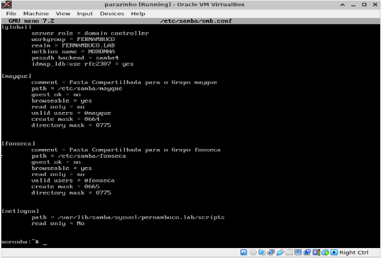
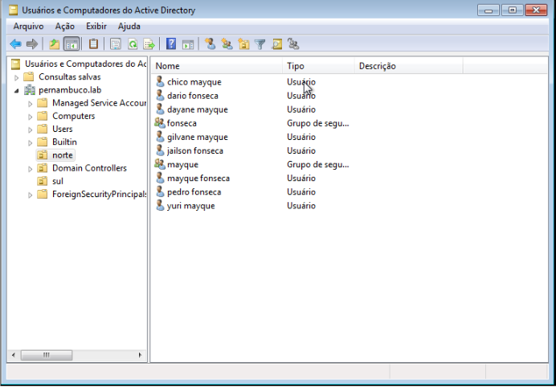
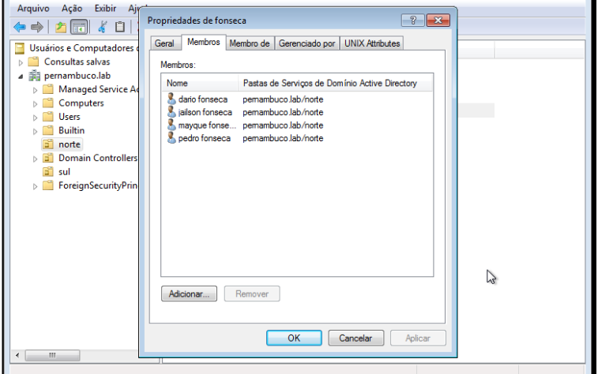

LDAP
O LDAP (Lightweight Directory Access Protocol) é um protocolo de acesso a diretórios utilizado para consultar e manter informações de diretórios de maneira hierárquica. Aqui está um resumo conciso:
Instalação
Use o gerenciador de pacotes da sua distribuição Linux, no meu caso, minha distro é Ubuntu.
sudo apt-get install slapd ldap-utils
Durante a instalação, você será solicitado a configurar a senha do administrador do LDAP (cn=admin,dc=example,dc=com). Forneça uma senha boa, que não seja tão comum.
O arquivo de Configuração Principal:
/etc/ldap/slapd.conf
Abra o arquivo de configuração principal para edição.
sudo nano /etc/ldap/slapd.conf
Configuração do serviço dentro do ambiente gráfico Windows 7.
Abra o "Active Directory":
Você pode usar esse atalho no seu teclado:
Pressione Win + R para abrir a caixa de diálogo "Executar". Digite dsa.msc e pressione Enter.
Conecte-se ao Servidor do AD:
Selecione o nó "Domain Controllers" e escolha "Connect to Domain Controller..." no menu de contexto.
Selecione o controlador de domínio que deseja gerenciar e clique em "OK".
Crie as Organizational Units (OU):
No painel esquerdo, clique com o botão direito no domínio raiz e escolha "New" -> "Organizational Unit".
Digite o nome da OU, como "norte", e clique em "OK".
Repita o processo para criar a OU "sul".
Mova Grupos e Usuários para as Novas OUs:
Localize os grupos mayque e fonseca dentro da estrutura do AD. Selecione os grupos ou usuários que deseja mover. Clique com o botão direito do mouse e escolha "Move". Navegue até a nova OU correspondente (norte ou sul) e clique em "OK".
Teste
Entrar no arquivo: /etc/samba/smb.conf
Adicionar os grupos com os nomes: mayque, fonseca e adicionar linhas de configurações. Depois criar os usuários que é preciso dentro de cada grupo.

Tela da criação das OU, grupos e usuários.

Verificando os usuários dentro do grupo correspondente e movido pra sua OU.
